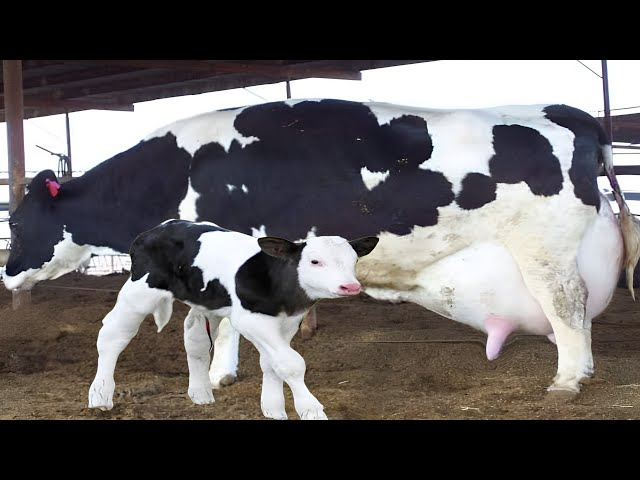
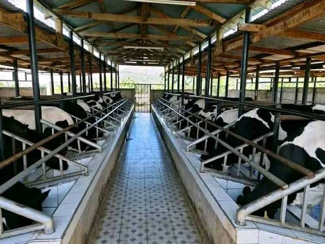

Dairy Livestock
Currently,we have only fresian breed.We hope to have more breeds
in the near future.
We currently have 15 cows in our farm

- Yield: 20-30+ liters per cow in one day
- We use modern methods of milking as shown below
- Cow's resting place is always clean for better yields
Farm Gallery





